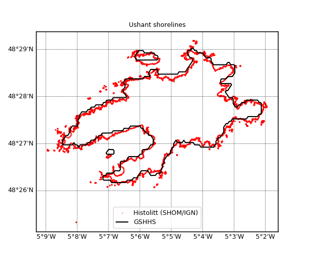

1.3.4.1.2. Comparaison de traîts de côte¶
Voir : GSHHS EUROSION Histolitt

Tracé des différents trait de côte.
# Lecture des divers traits de cote
from vacumm.bathy.shorelines import *
zone = (-5.15, 48.42, -5.03, 48.49)
gmt = GSHHS(clip=zone)
#euro = EUROSION(clip=zone)
thc = Histolitt(clip=zone)
# Trace
kwpt = dict(fill=False, points=True, s=2., alpha=.7, points_linewidth=0, show=False)
thc.plot(color='r', zorder=12, m_left=.1,
label='Histolitt (SHOM/IGN)', m_figsize=(5.5, 6), **kwpt)
#euro.plot(color='sg', zorder=11, label='EUROSION', m='auto', **kwpt)
gmt.plot(fill=False, color='k', linewidth=1.5, zorder=10, label='GSHHS',
m='auto', show=False)
# Fin de plot
from pylab import show, legend, title, close
from vacumm.misc.plot import savefigs
legend()
title("Ushant shorelines")
savefigs(__file__, pdf=True)
close()